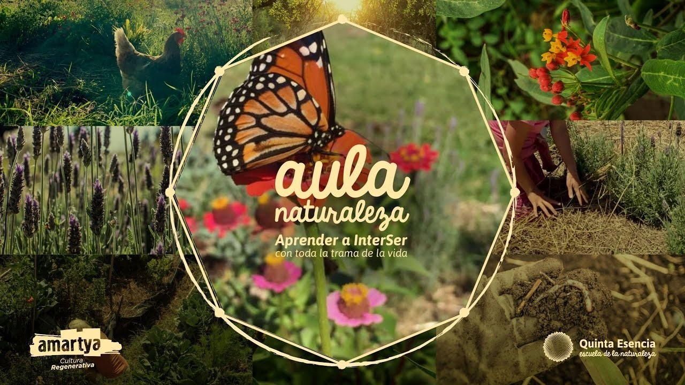

Aula Naturaleza es un proyecto que plantea una educación diferente. Se trata de una propuesta en la que se enseñe desde una temprana edad un modelo inspirado en la naturaleza, aprendiendo a cuidarla y a respetarla, así como también a imitarla. Si queremos cambiar el mundo, empezar por la educación es un gran paso. De esta manera, lxs más pequeñxs aprenden a amar a la madre tierra y a percibirse como seres interdependientes que colaboran entre sí.
¿Cuándo es que aprendimos que era necesario competir para triunfar? ¿Que los recursos eran ilimitados y exclusivos para nuestro consumo? Es momento de dejar atrás los viejos patrones que nos llevan a una crisis del sistema e incorporar maneras alternativas de relacionarnos con los demás y el entorno.
Quinta Esencia es el grupo que lleva a cabo esta misión para que las nuevas generaciones integren la cultura con la naturaleza, generando una visión que cambie el rumbo hacia el que venimos yendo y el antiguo modelo mental. Aula Naturaleza es su espacio, en el que podemos regenerar nuestro pensar, sentir y actuar y hacer que esta nueva visión se rija por las leyes naturales. De esta manera, la escuela es un lugar que enseña a pensar de forma holística y regenerativa, entendiendo las relaciones según los patrones de la naturaleza e inspirando proyectos revolucionarios a partir de esto.
Con esta misión, Quinta Esencia diseñó una currícula que incluye la alimentación saludable a base de plantas, la práctica de yoga, talleres de arte y naturaleza, bioconstrucción, salud holística y claves para la comunicación, entre muchas cosas más.
Tomando al ser de manera integral, se unen la creatividad, el desarrollo físico, intelectual y espiritual, así como la experiencia personal, en el trabajo colectivo y la inteligencia grupal al servicio de un mundo mejor. ¿Te imaginas cómo sería el planeta si en la escuela nos hubiesen enseñado que estamos interconectados con todos los seres vivos y debemos respetarlos?
De la naturaleza podemos aprender a generar y cuidar la vida en todas sus formas, entendiendo que cada parte del ecosistema es importante y cumple una función.